In the previous section, we looked at marginal functions, the difference between \(f(x+1)\) and \(f(x)\text{.}\) For functions that are only defined at integer values, this is the obvious way to define a rate of change. However for functions that are defined on an interval, we would like to use the information at values closer to our value of \(x\text{.}\)
Intuitively, we would like to be able to zoom in on the graph of \(f(x)\) at a point until the graph looks like a straight line, then pick two points on that line, and find the slope as the rise over the run. The rate of change is then the slope of the line we have found. If we could zoom arbitrarily close, this process would give an instantaneous rate of change, or the derivative of the function at that point.
Definition3.2.1.Formal derivative at a point.
For a function \(f(x)\text{,}\) the instantaneous rate of change of \(f(x)\) at \(x=x_0\text{,}\) or the derivative of \(f(x)\text{,}\) at \(x=x_0\text{,}\) denoted as \(f'(x)\text{,}\) is defined as
where \(\lim_{ x\to a}f(x)\) is understood to be value that \(f(x)\) gets arbitrarily close to by making \(x\) arbitrarily close to \(a\text{.}\)
Our task in this section is to turn our intuitive notion and definition and into a process that lets us find the value, and to find it efficiently.
Example3.2.2.A simple derivative at a point.
Let \(f(x)=x^2\text{.}\) We would like to find \(f'(1)\text{.}\)
Figure3.2.3.Simple Derivative at a Point
Solution1.Solution A - Intuitive Definition
We start with our intuitive notion. We want to look at the graph of \(f(x)\text{,}\) zoomed in far enough that the graph looks like a straight line. I set up a worksheet to look at the graph of \(f(x)=x^2\) near \(x_0=1\text{.}\) Since I want to be able to zoom in, I set up the graph so that it plots points that are multiples of \(\Delta x\) from \(x=x_0\text{.}\) I also want to plot the line connecting the points \((x_0,f(x_0))\) and \((x_0,f(x_0+\Delta x))\) and notice that the slope of the line connecting these points, the secant line, is
For this example \(x_0=1\text{.}\) If \(\Delta x=1\text{,}\) we can see that the function and the secant line are clearly distinct.
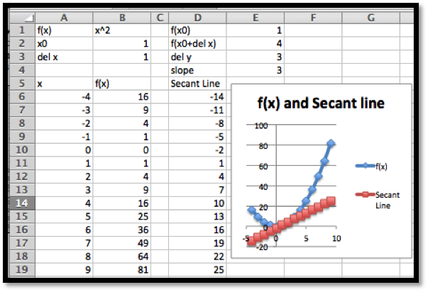
Figure3.2.4.
The worksheet is designed to make it easy to change the value of \(\Delta x\text{.}\)
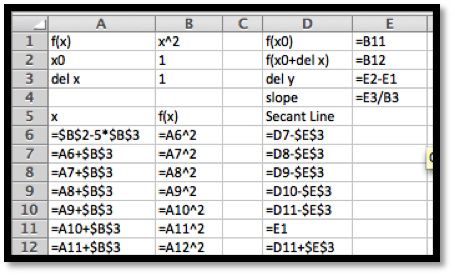
Figure3.2.5.
As we can see, if we let \(\Delta x=1\text{,}\) the slope is 3, but we have not zoomed in far enough for the graph of \(f(x)\) to look like a straight line. Letting \(\Delta x=0.01\text{,}\) the slope is 2.01, and the graphs of the function and secant line seem to be the same.
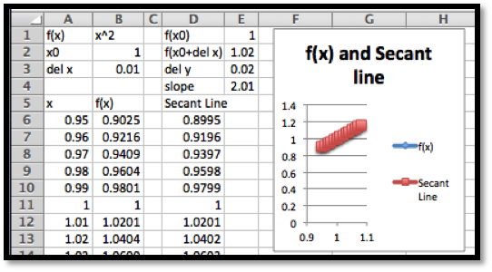
Figure3.2.6.
With some experimentation, taking both positive and negative values of \(\Delta x\text{,}\) we get the following table of values:
\(\Delta x\)
slope
\(\ \ \ \)
\(\Delta x\)
slope
1
3
\(\ \ \ \)
-1
1
0.1
2.1
\(\ \ \ \)
-0.1
1.9
0.01
2.01
\(\ \ \ \)
-0.01
1.99
0.001
2.001
\(\ \ \ \)
-0.001
1.999
It is clear that as \(\Delta x\) gets very small, the slope of the secant line gets closer and closer to 2. Thus \(f'(1)=2\text{.}\)
Solution2.Solution B - Numerical Limit
The method of the first solution takes too much work and requires us to reset a worksheet and keep track of the slope as we try a number of values for \(\Delta x\text{.}\) We would like to create a worksheet that simply shows the values of the slope of the secant line for values of \(\Delta x\) and takes the value that this approaches. We can set up a worksheet where each line takes \(\Delta x\) from the previous line and divides by 10.
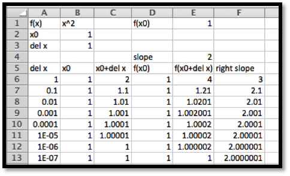
Figure3.2.7.
We get the same value whether we start \(\Delta x\) at 1 or -1. Once again, we find \(f'(1)=2\text{.}\)
Solution3.Solution C - Calculator Definition
This method of finding the derivative still has a number of difficulties. In the example above, the exact answer we want (in this case 2) did not show up in any of our computations. We also find that if we make \(\Delta x\) too small, we run into a problem called round off error. If the next chapter we will look at methods that compute derivatives symbolically, but for this chapter we want an easy method of approximation. We will use the approximation technique that is used by most graphing calculators when they compute the derivative. They use a “balanced difference quotient” where we find the slope of the secant line between points \(\Delta x\) before and after the point we are interested in. As the picture below shows, compared to either the right secant or the left secant, for most functions the balanced secant is closer to being parallel to the tangent line.
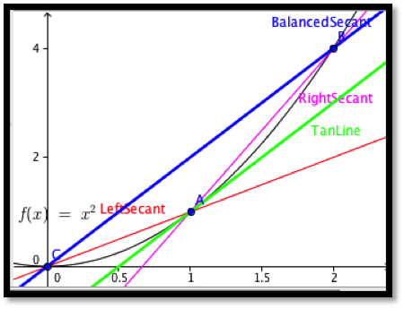
We will use the default on calculators, that is we will use \(\Delta x = 0.001\text{.}\)
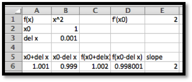
For our example this gives our familiar result that \(f'(1)=2\text{.}\)
We formalize this last approach.
Definition3.2.8.Calculator Approximation of the Derivative.
For the rest of this text, when we need to compute a numerical approximation to the derivative, we will use the calculator approximation of the derivative.
We should note that the calculator rule is an approximation technique, rather than a definition. It will give a misleading answer for functions that do not approximate a straight line in a window that is 0.002 wide. In this course, the approximation will only cause a problem with functions that have corners or cusps, like the functions \(f(x)=|x|\) and \(f(x)=x^{(2/3)}\) at \(x=0\text{.}\) The main advantage of the using the calculator rule is that it is straightforward enough to compute to allow us to plot a function and its derivative on a single graph. This allows us to compare the graph of the function with the graph of the derivative.
Figure3.2.9.Video Grophing a function and its derivative
Example3.2.10.A Function and its Derivative.
Compare the graph of \(f(x)=x^2-2 x+1\) and the graph of its derivative, using separate axes for the two graphs. What features of the graph of \(f(x)\) can be located by using the graph of \(f'(x)\text{?}\)
Solution.
Since this problem will serve as a template for a question we will look at many times, it is worthwhile to look at it in detail. We start by setting up a workbook that will have the structure we need to compute a chart of values for \(f(x)\) and \(f'(x)\text{.}\)
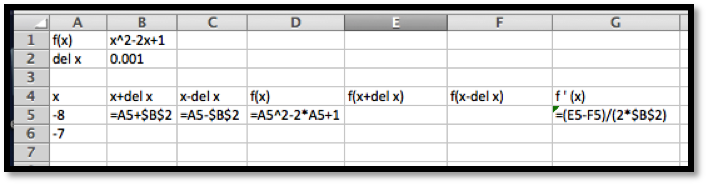
Figure3.2.11.
The picture above gives the minimal amount we need to type in. The rest will be done with quick filling. The entry of cell B1 gives the formula for the function. In cell D5 we evaluate the function using the first value of \(x\) from cell A5. We have two values of \(x\) in cells A5 and A6 so that we can quick fill to get a list of \(x\) values. We use absolute references for \(\Delta x\text{,}\) so it will not change on quick fills. We then fill cells E5 and F5 from cell D5, then fill row 6 from row 5, then fill the rest of the chart from rows 5 and 6.
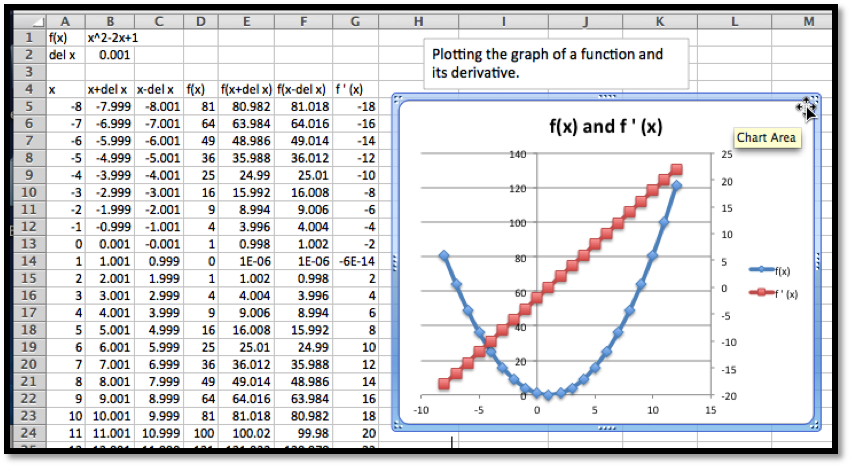
It is then a straightforward task to plot the two curves. We notice that the graph of the function is a parabola. If the derivative is negative, the graph of \(f(x)\) is decreasing. If the derivative is positive, the graph of the function \(f(x)\) is increasing. The graph of \(f(x)\) reaches its minimum at the vertex, which is also where \(f'(x)=0\text{.}\) We also notice that the derivative of this parabola seems to be a straight line.
Several of our observations from this example work in general.
Looking at a single point, the derivative of a function is the slope of the line tangent to the graph at that point.
The tangent line is a best linear approximation to the graph at a point.
Looking at the derivative at lots of points, the graph of a function is increasing when the derivative is positive, and the graph of a function is decreasing when the derivative is negative.
For the graph to have a point that is locally a maximum or minimum, the derivative cannot be positive or negative, so the derivative must either be zero or undefined for the graph of the function to have a maximum or minimum.
Finding places where functions reach their highest and lowest values is an important activity in mathematics. We will look at these applications in more depth in upcoming sections. The reader is warned that we can have places where the derivative is zero but the function is still increasing or decreasing.
Example3.2.12.The derivative of a more complicated function.
Compare the graph of \(f(x)=x^3 (x^2-36)\) and the graph of its derivative, using separate axes for the two graphs. What features of the graph of \(f(x)\) can be located by using the graph of \(f'(x)\text{?}\)
Solution.
The setup for this example is very similar to the last problem.
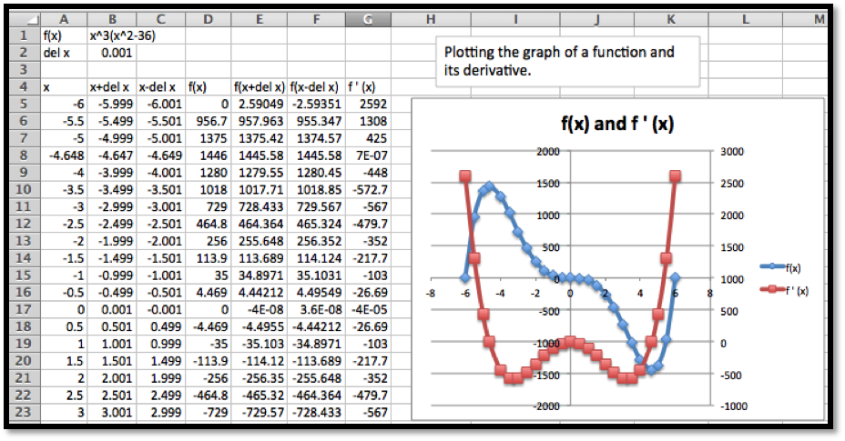
Since the values of \(f(x)\) range between -500 and 1500, we note that \(f(x)\) is the blue graph and uses the axis in the center of the graph. Similarly the values of \(f'(x)\) range between -500 and 2500, we note that \(f'(x)\) is the red graph and uses the axis on the side of the graph.
This time we notice three places where the derivative seems to be zero, when \(x\) is near \(-5\text{,}\)\(0\text{,}\) and \(5\text{.}\) We use goal seek on the derivative and find that the derivative is zero when \(x=-4.648\text{,}\) 0, or 4.648. Looking at the graph of f(x) at those points, we see that \(f(x)\) has a maximum when \(x=-4.648\text{,}\) and a minimum when \(x=-4.648\text{.}\) When \(x=0\text{,}\)\(f(x)\) is neither a maximum nor a minimum.
In the next chapter, we will look at ways to find the derivative of a function symbolically. We can already reason our way to symbolically finding the derivative of simple functions. If our function \(f(x)\) is constant or linear, then the graph of the function is its own tangent line, so the derivative is simply the slope of the graph. For quadratic functions we noticed that the graph of the derivative seems to be linear. If we can guess the form of the derivative, we can use trendlines to produce a formula.
Example3.2.13.Using trendlines to get the formula of a derivative.
Figure3.2.14.Video presentation of this example
Use trendlines to find a formula for the derivative of \(f(x)=2x^2+5x-7\text{.}\)
Solution.
The setup for this example is very similar to the last problem. We simply change the function. This involves changing the formulas in cells B1 and D5, then using quick copy to change the formulas for the cells in columns D through F.
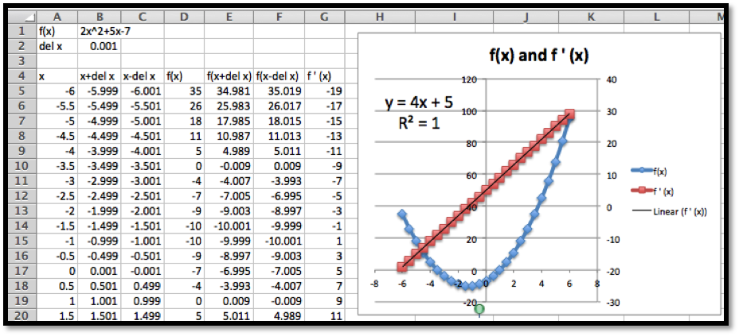
Once we have points for the derivative, we add a trendline using a linear model. We set the options to show both the formula for the trendline and the value of \(R^2\text{.}\) The fact that \(R^2=1\text{,}\) indicates the trendline we found exactly fits the data. In the workbook connected to this section there is a page for Example 6B. It uses parameters for the coefficients on a quadratic formula, so that you can explore the derivative of a general quadratic function.
A Note on Terminology.
It is worthwhile to point out some ambiguity in the terms used in this section and the previous section. We have been using the term \(\marginal f(x+1)\) for the change \(f(x+1)-f(x)\text{,}\) where \(f(x)\text{,}\) might be revenue, or cost, or profit. This is the standard definition of a marginal function from finance or economics. However, if you do a web search on “calculus marginal revenue” you will find that most calculus books treat the marginal function as simply another name for the derivative. While they are related, they are not the same thing. In the next chapter, we will find that it is often easier to produce a formula for the derivative of a function rather than the related marginal function, which is why the derivative is used for the marginal function. However, in this text, we will stick to the correct definition of marginal functions.
Summary.
The notion of derivative is one of the key concepts of calculus. The concept of the derivative of a function is closely connected to the concept of marginal function. We gave three ways of understanding the derivative of a function at a point.
Intuitive understanding
The derivative of \(f(x)\text{,}\) at \(x=x_0\) denoted as \(f'(x_0)\text{,}\) is the slope of the line obtained by zooming in on the graph at \((x_0,f(x_0 ))\) until it looks like a straight line.
Formal definition
The derivative of \(f(x)\text{,}\) denoted as \(f'(x)\text{,}\) is defined as
1.Reading check, 3.2, Numeric Derivatives and Limits,.
This question checks your reading comprehension of the material is section 3.2, Numeric Derivatives and Limits, of Business Calculus with Excel. Based on your reading, select all statements that are correct. There may be more than one correct answer. The statements may appear in what seems to be a random order.
The calculator definition of derivative approximates \(f'(x)\) by \((f(x+0.001)-f(x-0.001)) / (0.002)\text{.}\)
If the derivative of \(f(x)\) is negative, the graph of the function \(f(x)\text{,}\) is increasing.
The calculator definition of the derivative gives a good approximation for all functions.).
If the derivative of \(f(x)\) is positive, the graph of the function \(f(x)\text{,}\) is increasing.
The calculator definition of derivative has problems with corners and cusps.
For a function \(f(x)\text{,}\) the derivative \(f'(x)\) is defined as the limit as \(del\ x\) approaches 0 of \((f(x+del \ x)-f(x))/(del\ x)\text{.}\)
None of the above
ExercisesExercises: Numeric Derivatives and Limits
Exercise Group.
For each specified function and x-value, do the following:
Find a value of \(\Delta x\) small enough that graph of the function looks like a straight line on the region from \(5*\Delta x\) before the x-value to \(5*\Delta x\) after the x-value. Graph the function in this region and find the slope of the corresponding secant line
Estimate the derivative by finding the slope of the secant when \(\Delta x\) takes the values 0.1, 0.01, 0.001, 0.0001, -0.1, -0.01, -0.001, and -0.0001. Give a value of the limit of the slope.
Use the calculator estimate to estimate the slope of the tangent.
Compare the value of the derivative \(f'(x)\) with the corresponding value of the marginal function \(marginal\ f(x+1)\text{.}\)
Comment: For problems 1-10 it makes sense to set up the table once with parameters that can be easily changed between problems.
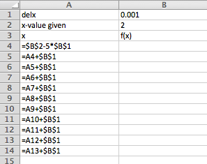
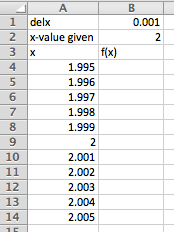
Excel Commands
Excel Output
Change \(\Delta x\) (delx) and \(x\)-value given depending on the problem, and adjust the function and the rest will autofill. Once the graph has been added that will update as well.
1.
Use \(f(x)=x^2+3\) at \(x=2\text{.}\)
Solution.
Using Slope= (B14-B4)/(10*B1) we get the following
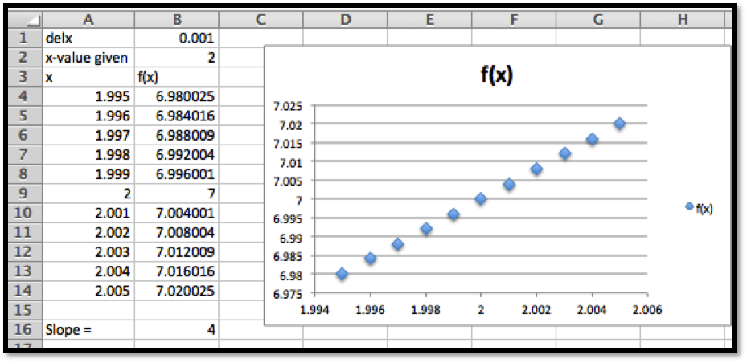
So the slope for this choice of delx is 4.
Your may have chosen a slightly different \(\Delta x\text{,}\) and as long as the graph looks roughly linear that would be fine.
You can either change delx and record each of the slopes in the Excel sheet above, or we can set up another table that records the slopes for us. We prefer the second method because the table of values allows us to inspect the pattern more easily.
Comment: Notice the very large difference between the derivative and the marginal function. The exponential function is very curved and this curvature means that the discrepancy between the marginal function and the derivative will be large. The difference between the two is much smaller for graphs that are less curved.
8.
Use \(f(x)=2^x\) at \(x=3\text{.}\)
9.
Use \(f(x)=\ln(x)\) at \(x=5\text{.}\)
Solution.
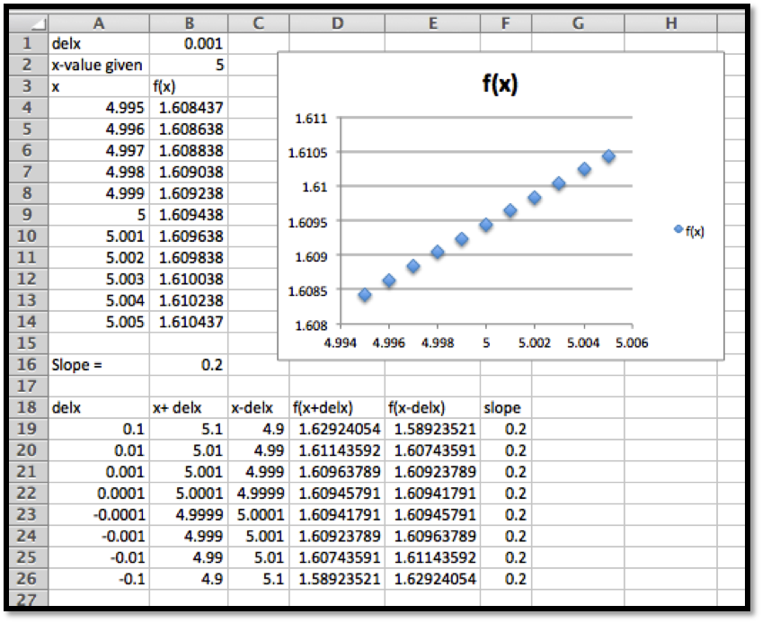
The slope of the secant line is 0.2.
From work in part a, the limit is also 0.2.
From Row 21 we see that the slope of the tangent line is estimated to be 0.2